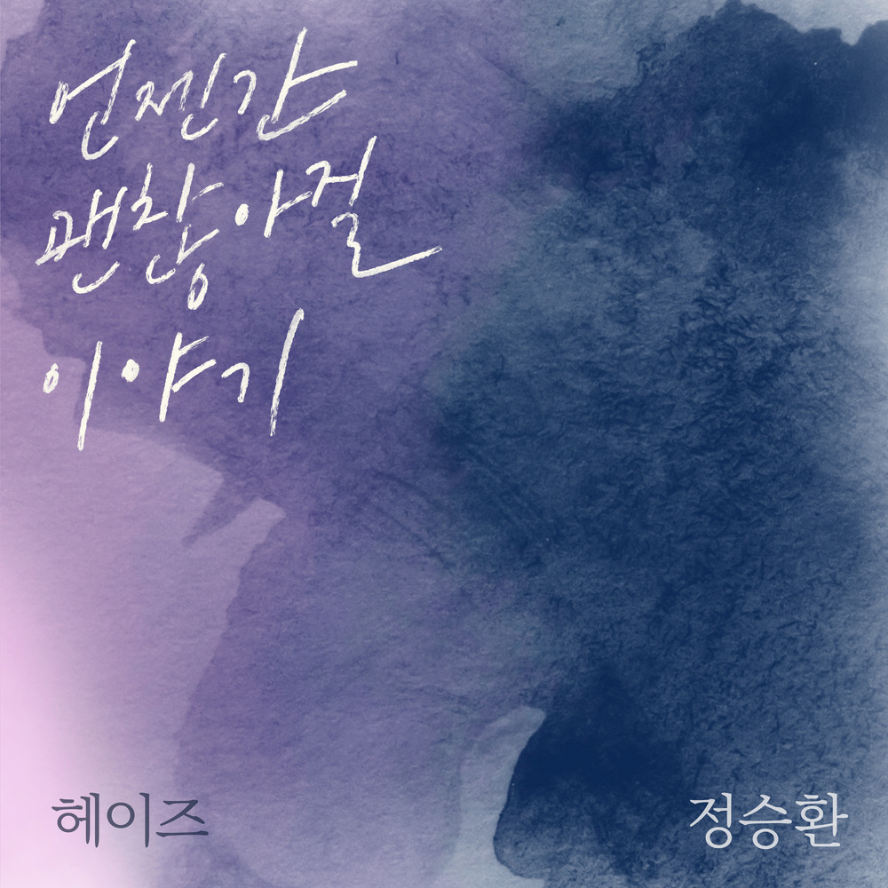

안녕하세요, 라보엠입니다.
오늘은 헤이즈(Heize)와 정승환이 함께 부른 듀엣곡 ‘언젠간 괜찮아질 이야기’를 소개해보겠습니다. 이 곡은 2023년 8월 29일 오후 6시 공개된 ‘프로젝트 컬러즈(Prjt. Colors)’의 첫 번째 음원으로, 이별을 앞둔 연인들의 마음을 사실적인 가사와 촉촉한 감성으로 담아냈습니다.

헤이즈와 정승환의 목소리
헤이즈의 보컬은 차분한 체온처럼 곡의 바닥을 따뜻하게 깔고, 정승환은 맑은 결을 살린 목소리로 문장마다 여운을 남깁니다. 두 사람이 번갈아 부르다 함께 목소리를 포개는 순간에는, 울지 않으려 애쓰는 두 사람의 마지막 합의처럼 들리기도 합니다.
특히 “우리 이런 아픈 날이 지나고 부디 서로 행복하기로 해요”라는 문장은, 이 곡이 전하려는 위로의 핵심을 가장 또렷하게 보여줍니다.
가사에 담긴 작별 인사
첫 소절은 마치 하루 끝에 적어 내려간 일기 같습니다. “고단한 내 하루의 끝에 따스히 안아주던 너, 어떻게 해야 그토록 포근했던 밤 잊혀질까요”라는 가사는, 사랑이 끝나가도 여전히 몸에 남아 있는 온도를 떠올리게 합니다. 누구나 한 번쯤 겪었을 ‘사라진 뒤에야 더 또렷해지는 장면’들이 조용히 고개를 들죠.
이 노래는 감정을 폭발시키기보다, 서로에게 남길 말을 천천히 고르는 방식으로 흘러갑니다. “놓지 못했던 아픈 기억 보내 주기로 해요 / 우리는 여기서 안녕” 같은 구절은, 미련을 버리기 어려워도 결국 놓아야 한다는 결심을 담담하게 보여줍니다.
또 “같이 걷던 길을 혼자 걸어도… 슬퍼하지 말기로 해, 돌아보지 말기로 해”라는 대목에서는, 이별 후 마주하게 될 일상을 미리 그려보며 스스로를 다독입니다. 결국 후렴에서 반복되는 제목 그대로, 시간이 지나면 ‘언젠간 괜찮아질’ 거라는 문장이 마음속에 남습니
야외녹음실 라이브의 여운
이 곡은 1theK ‘야외녹음실 | Beyond the Studio’ 라이브 영상으로도 많은 사랑을 받았습니다. 스튜디오의 완벽한 벽 대신 열린 공간에서 부르는 라이브는, 노래 속 ‘이별 이후의 바람’ 같은 공기를 더 선명하게 느끼게 해줍니다. 노래가 끝난 뒤 두 사람이 “It’s gonna be okay someday”라는 말을 덧붙이며 인사를 건네는 장면도, 곡의 분위기와 잘 어울리는 따뜻한 마무리로 남습니다.
맺음말
헤이즈 정승환의 ‘언젠간 괜찮아질 이야기’는 이별을 미화하지 않고, 아픈 시간을 인정한 뒤 그 다음을 살아가려는 마음을 담아낸 듀엣 발라드입니다. 혼자 걷는 길에서 우연히 닮은 뒷모습을 보게 되는 날, 혹은 겨울 밤 갑자기 마음이 무너지는 순간에 이 노래를 틀어보세요. 오늘의 슬픔이 내일의 평온으로 바뀌는 속도는 느릴지 몰라도, 그 변화가 결국 찾아온다는 믿음을 조용히 남겨줄 겁니다.